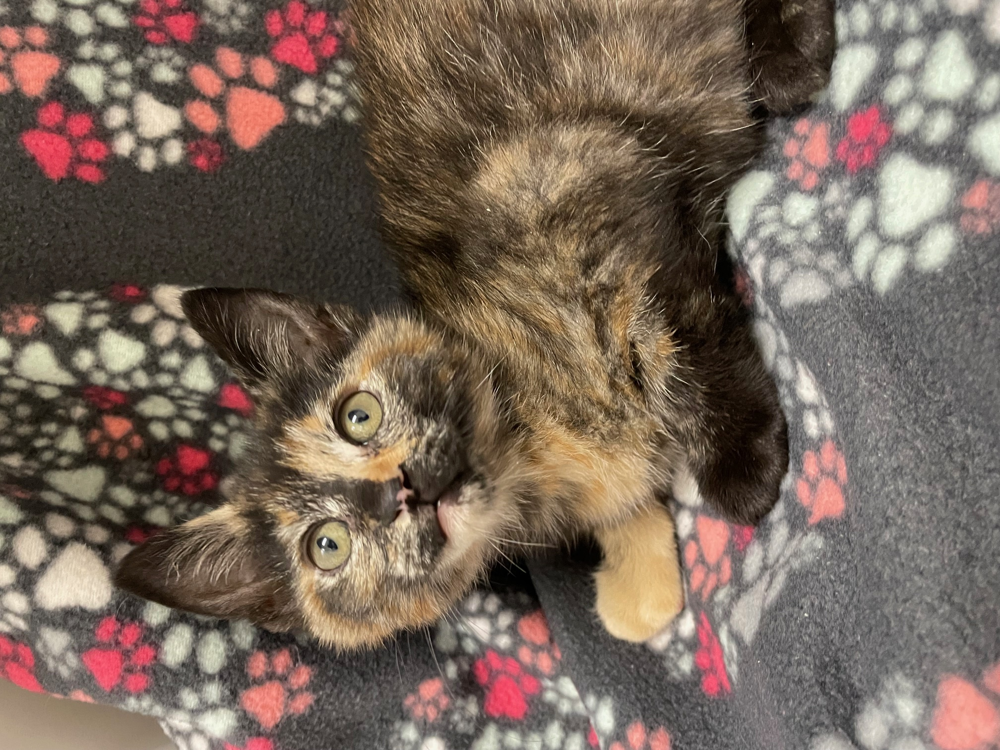
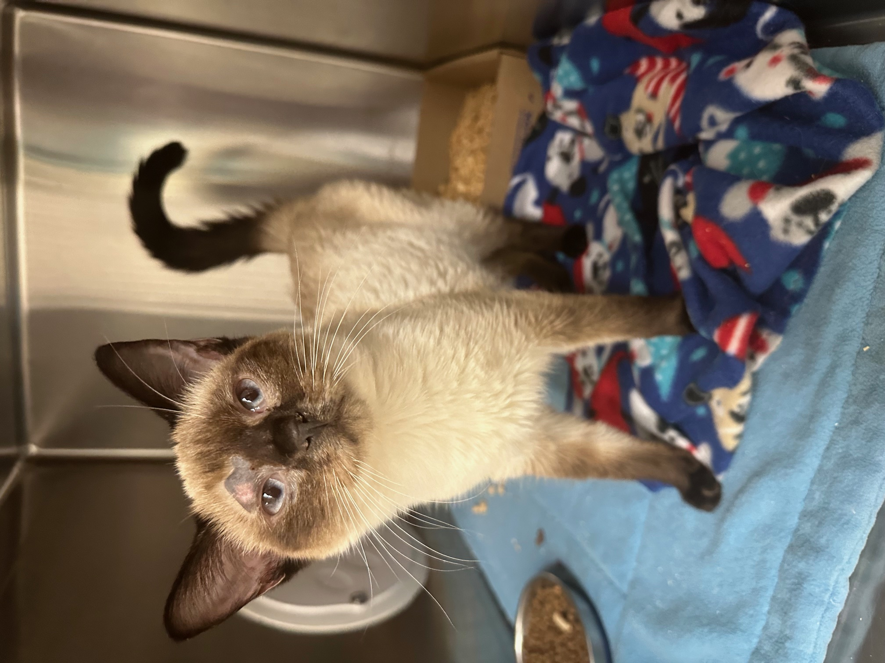
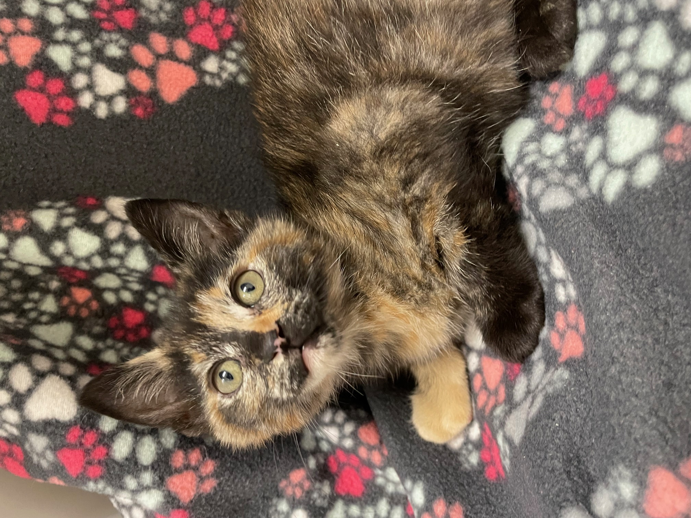
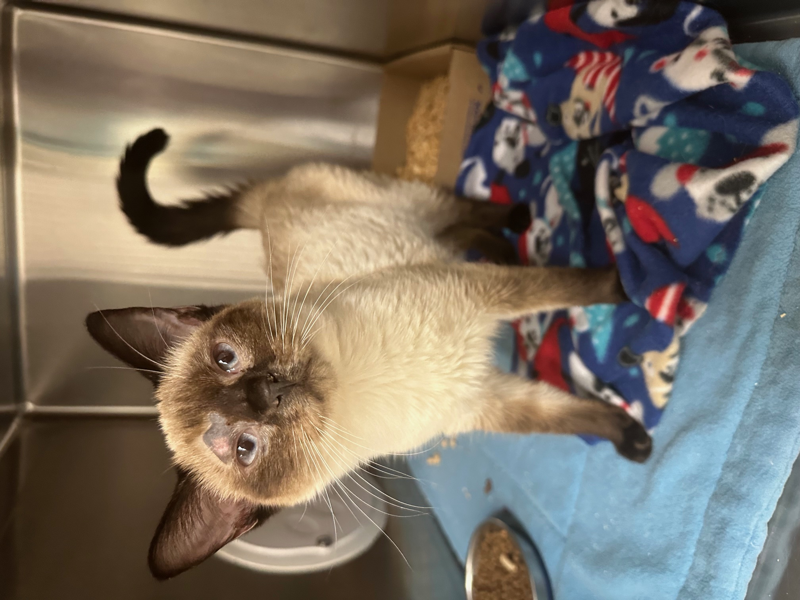

Your paws make an impact
This is your resource for all things kitty. If you're considering adopting a kitten companion, curious about essential care basics or interested in more advanced training like harness and clicker training. The goal of these comprehensive guides are to help better cat's lives, and support the people who love them.
Each guide is designed to provide you with the knowledge and tools you need to ensure your feline friend is happy and healthy. From understanding the different stages of kitten development to learning about basic care practices and the magic of cat TV, this encyclopedia aims to be a comprehensive resource for cat lovers everywhere.
wertyuiopasd

Protect your Purrfect Pal
Whether you're a new cat owner or a seasoned feline enthusiast, these guides will help you navigate the wonderful world of cats. Explore the links in the navigation bar to learn more about each topic and discover how you can make a positive impact on the lives of cats in your community.
Remember, every cat deserves a loving home and the best care possible. By educating yourself and sharing this knowledge with others, you can help create a better world for our furry friends.
Thank you for visiting Claws & Effect, and we hope you find the information here helpful and inspiring!
ghjklzxcvbnm
 


